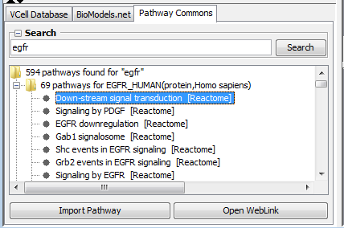

The Pathway Commons panel allows to query and download biological pathways from Pathway Commons in BioPAX Level 2. Pathway Commons aggregates and integrates the content of nine major pathway databases (BioGRID, MSKCC Cancer Cell Map, Human Protein Database, HumanCyc, SBCNY IMID, IntAct, MINT, NCI/Nature PID, Reactome). As of October 2011, Pathway Commons contains 1,668 pathways, 442,182 interactions, 86,282 physical entities and 414 organisms. Downloaded pathways can be used to build and annotate models based on the pathways and their links to terminologies and databases about proteins, small molecules, genes, anatomical features, organisms and publications.

The Search at the top of the Pathway Commons Panel works as OR for several search terms, and search term is searched inside pathways from Pathways Commons. For every pathway the database and organism are displayed after. The Filter below search results filters just names of the pathways, it does not check the content of pathways. The list of pathways can be filtered by database name or organism, or sorted in alphanumeric order.
To begin, enter a search text in the search text field and press the Search button (or just press Enter on your keyboard) to send a request to Pathway Commons. The result of this query is a list of pathways in which the search term participates.
Each pathway listed in the search results can be selected and then previewed in the VCell by pressing the Preview button, which will obtain the pathway in BioPAX Level 2 from Pathway Commons.
The Open Weblink button will cause the web browser to open the page of Pathway Commons dedicated to that pathway.